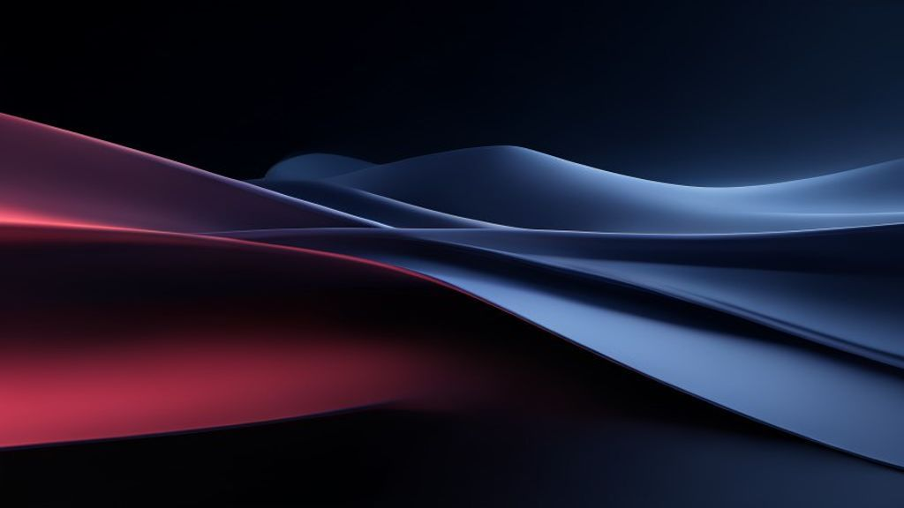

约翰·特努斯与苹果的硬件定义未来，SpaceXAI与Cursor¶

苹果将约翰·特努斯推上更高位置，这暗示着它的未来押注在硬件差异化上；而SpaceX与Cursor的交易，在此背景下显得格外合理。
硬件，才是苹果真正的护城河¶
苹果最近的人事调整，核心是把硬件工程高级副总裁约翰·特努斯提拔进了执行团队。这则新闻在科技圈没有激起太大波澜，毕竟特努斯在乔布斯时代就已加入苹果，主导了从M1芯片到Vision Pro的硬件体系。但如果你把这件事放在苹果过去十年战略演变的坐标系里看，信号就变得异常清晰。 过去十年，苹果的护城河是什么？很多人会说是生态系统、是App Store、是服务收入。这些都没错，但它们是结果，不是原因。真正的护城河，是硬件与软件的深度整合——也就是所谓的“垂直整合”。特努斯的升职，意味着苹果正在把这条护城河挖得更深、更宽。 想想看，当其他手机厂商还在比拼摄像头像素、电池容量这些参数时，苹果在做什么？它在自研芯片、自研调制解调器、自研显示驱动。这些硬件层面的投入，短期看是成本，长期看是壁垒。因为硬件一旦形成体系，对手要复制就不是“买一个更好的零件”那么简单，而是要从零开始重建一套系统。 特努斯领导的硬件团队，正是这套系统的总设计师。他的升职，本质上是在告诉市场：苹果不会因为AI时代的到来就放弃硬件优势，恰恰相反，它要把硬件变成AI落地的核心载体。
SpaceXAI：当物理世界遇上智能算法¶
SpaceX与Cursor的合作，乍看有些突兀。Cursor是一家做AI代码补全工具的公司，估值不过几十亿美元，和SpaceX这种航天巨头似乎不在一个量级。但如果你理解SpaceX的终极目标——让人类成为多星球物种——这笔交易就变得顺理成章。 火箭制造本质上是一个极度复杂的系统工程。从材料科学到流体力学，从轨道计算到供应链管理，每一个环节都需要大量工程师的脑力劳动。而Cursor这类AI工具，恰恰能把工程师从重复性的代码编写中解放出来，让他们专注于更高层次的系统设计。 但这笔交易更深层的含义在于：SpaceX正在把AI从“数字世界”引入“物理世界”。大多数人对AI的认知还停留在聊天机器人、图像生成这些软件层面，但SpaceX要做的，是把AI嵌入到火箭的制造、发射、回收的全流程中。这不是简单的“用AI写代码”，而是“用AI造火箭”。 想象一下：当AI能够自动优化火箭发动机的燃烧室设计，自动调整推进剂的混合比例，自动预测零部件的疲劳寿命——这就不再是代码层面的效率提升，而是物理世界里的能力跃迁。SpaceX与Cursor的合作，本质上是为这种跃迁铺路。
Cursor的价值，不在代码，在“工程智能”¶
Cursor的崛起，是AI编程工具市场的一个异数。GitHub Copilot有微软和OpenAI背书，Replit有庞大的用户社区，而Cursor的创始人Anysphere是一个相对低调的团队。但Cursor的独特之处在于，它不满足于“帮程序员写代码”，而是试图理解“程序员为什么要写这段代码”。 这听起来很抽象，但具体到工程实践就很好理解。一个资深工程师写代码时，脑子里想的不是语法，而是系统架构、性能瓶颈、可维护性。Cursor的AI模型，正是试图捕捉这种“工程思维”——它不只是补全代码，而是理解上下文，预判需求，甚至主动提出优化建议。 SpaceX看中的，正是这种能力。因为火箭工程师面临的不是“写一段Python脚本”那么简单，而是“在满足物理约束的前提下，设计一个可复用的飞行控制系统”。Cursor的AI如果能理解这种约束条件，就能大幅降低工程试错成本。 更深一层看，Cursor代表了一种趋势：AI正在从“工具”进化为“协作者”。过去，工程师用AI写代码，就像用计算器做算术；现在，AI开始理解工程逻辑，就像有一个资深同事在旁边帮你审阅设计文档。这种转变，对SpaceX这种需要大量工程创新的公司来说，价值不可估量。
两条线索的交汇：硬件定义未来¶
把苹果和SpaceX放在一起看，你会发现一个共同的主题：硬件正在重新定义AI的价值。 苹果的硬件差异化，让AI能够以最自然的方式融入用户的生活——不是通过一个聊天窗口，而是通过摄像头、麦克风、传感器这些物理接口。SpaceX的硬件创新，让AI能够处理最复杂的工程问题——不是通过数据标注，而是通过理解物理世界的真实约束。 这背后是一个更大的趋势：AI正在从“数字原生”走向“物理原生”。过去十年，AI的突破主要发生在数字世界——图像识别、自然语言处理、推荐算法。未来十年，AI的战场将转移到物理世界——自动驾驶、机器人、航空航天、生物制药。而这些领域，恰恰是硬件能力决定上限的地方。 所以，特努斯的升职不只是苹果内部的人事调整，它代表了一种战略判断：在AI时代，硬件不是配角，而是主角。SpaceX与Cursor的合作也不只是一笔投资，它代表了一种认知：最好的AI，不是取代工程师，而是让工程师能做更伟大的事。 两条线索最终交汇于同一个结论：未来的竞争，不是软件对硬件的竞争，而是谁能把软件和硬件融合得更好。苹果和SpaceX，正在用不同的方式证明这一点。
声明：本文核心观点提取自互联网，经独立数字策展人本土化深度转译与结构重组，仅供商业逻辑学习与思考。